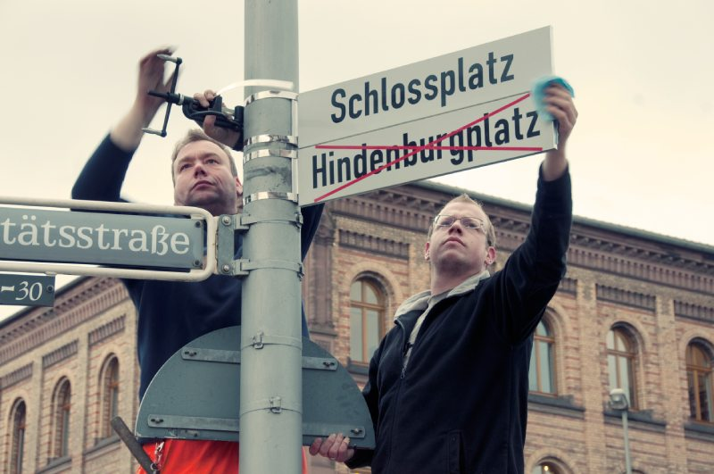
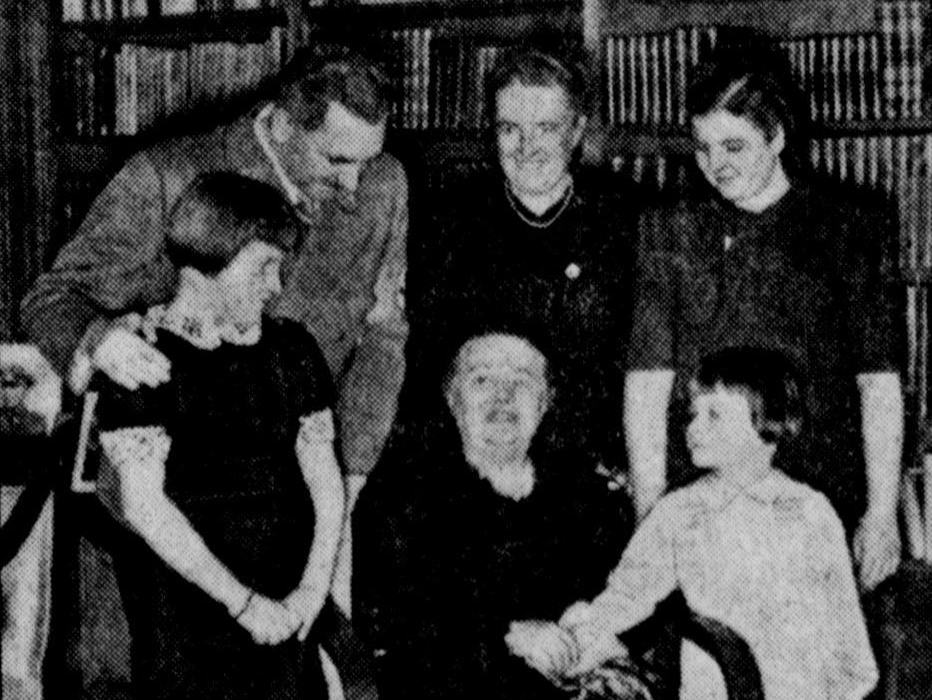
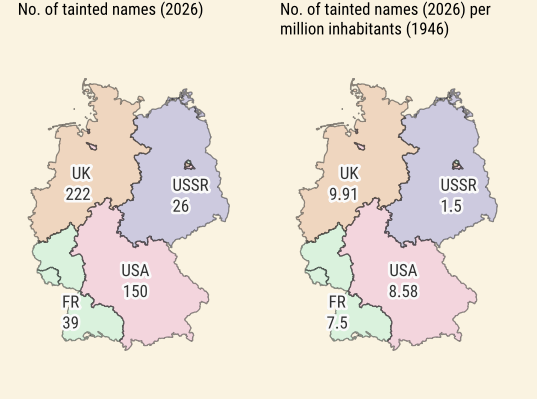

Introduction
At least since the 2010s, an intense debate has emerged in Germany regarding old street names and the way historical figures are honored in the public sphere. Beyond academic interest, this discussion is driven by current developments that seem to challenge the nation's democratic values, its openness to the world, and its dedication to human rights.
Following the 2011 exposure of the neo-Nazi terrorist organization NSU (National Socialist Underground) and the rise of right-wing populist movements since the mid-2010s, local politicians in many areas have reconsidered the names of streets and other public landmarks honoring old colonialists and racists—and particularly the supporters of Nazi rule. Prominent examples include cities such as Münster, Kiel, and Hamburg, which struck the name of Paul von Hindenburg (1847-1934) from central squares, waterfront promenades, and major thoroughfares, thereby banishing from the urban landscape the World War I general and anti-democratic president of the Weimar Republic (1925-1934) who had helped Hitler into power. A comparable shift has affected once-popular authors who promoted the Nazi regime and wartime sacrifice, such as Agnes Miegel, Ina Seidel, and Gustav Frenssen—figures largely forgotten today.
Debates about honors and renaming often spark intense public controversy and are sometimes conducted contentiously in the national public sphere. In principle, however, discussions about whether or not specific street namings and honors in public spaces are still acceptable are a matter of municipal politics. In a guideline from 2021, the German Association of Cities points to the complexity of decision-making processes — which must consider not only historical research, but also local sense of identity and municipal finances. Whether or not contested names remain, whether or not they are supplemented with explanatory plaques, or disappear entirely — these issues are frequently contested at the local level.
The Cases

{kind=link}
The interactive web map presented here offers a new, broader perspective on the problem. It locates three frequently criticized groups of namesakes across the entire country, thereby making overarching patterns visible. The data point to historical and structural reasons that led to the prevalence—or the absence—of Nazi-associated names, most notably the different policies of Allied military governments in 1945 to 1949 and the 1949-1990 division of Germany into East and West. The map is not intended to be a complete overview of all Nazi-associated names in Germany’s public spaces—an almost impossible undertaking. Instead, the map focuses on the representation of three selected groups:
- Paul von Hindenburg, due to the widespread prevalence of his name in the urban landscape. The former World War I general served as President of the Weimar Republic from 1925 until his death in 1934. In this capacity, he appointed Adolf Hitler as Chancellor on January 30, 1933, despite the Nazi Party lacking a parliamentary majority. In the following months, Hindenburg signed key emergency decrees and laws—including the Reichstag Fire Decree and the Enabling Act—which suspended fundamental civil rights. In doing so, he contributed decisively to the National Socialist leadership's ability to hollow out the Weimar Constitution and establish a dictatorship.
- Eighty-eight writers who, in October 1933—following the first book burnings, the dismantling of democracy, and the start of systematic persecution of Jews—signed a public "Vow of most loyal allegiance" to Adolf Hitler, thereby clearly aligning themselves with the regime.
- Industrialists who were convicted in the Nuremberg Industrialist Trials (Krupp, Flick, and IG Farben) in 1947/48, primarily for the exploitation, mistreatment, and "attrition" of forced laborers, as well as for the theft of Jewish property ("Aryanization").
These three categories represent only the tip of the iceberg of Nazi-associated namesakes in the German streetscape. There were indisputably numerous other industrialists honored today who supported the regime and profited from its crimes; writers who provided ideological support; and politicians who willfully participated in the construction of the dictatorship. However, the focus chosen here allows us to clearly highlight broader historical contexts and regional peculiarities in naming practices.
The Map
Analysis
According to OpenStreetMap data from February 2026, there are still a total of 437 names of streets and other public spaces within Germany dedicated to the three groups: Paul von Hindenburg; writers who signed the "Vow of most loyal allegiance" to Adolf Hitler in October 1933; and industrialists who were sentenced to prison as war criminals in the Nuremberg Industrialist Trials of 1947/48. Within this corpus, writers form the largest group with 296 streets and other features named after them, followed by Hindenburg with 130 designations to his name and the convicted industrialists with 11 honors. Among the most frequently honored individuals, Paul von Hindenburg stands out, followed at some distance by different writers.

Of the 88 signatories of the allegiance vow to Hitler, a total of 29 are still honored with street names today, with nearly sixty percent of these namings honoring three authors: Agnes Miegel, Peter Dörfler, and Ina Seidel. These authors thus maintain a prominent presence in public spaces. By comparison: Franz Kafka is honored with 36 streets in Germany; however, he likely occupies a far more central place in modern secondary school German curricula and cultural memory than Miegel (86 streets), Dörfler (49), and Seidel (41).
Industrialists convicted as war criminals have a smaller overall presence in the streetscape. Alfried Krupp von Bohlen und Halbach (5 streets) and Friedrich Flick (4) stand out here, while Max Ilgner of I.G. Farben and the Flick associate Bernhard Weiss are honored with one street each.

Of the states, Lower Saxony leads in the number of tainted designations, followed by Bavaria, North Rhine-Westphalia, Baden-Württemberg, and Schleswig-Holstein. The city-states of Berlin, Bremen, and Hamburg each have only a small number of tainted designations, with three, four, and two street names, respectively.

The distribution of tainted street names reveals striking regional disparities. Based on 1946 population figures, a statistical analysis for the year 2026 shows a clear correlation between the former occupation zones and the density of the selected Nazi-tainted names mapped here: the highest concentration is found in the British zone with 9.91 cases per million inhabitants, followed by the American sector with 8.58. In sharp contrast is the former Soviet-controlled zone and later East Germany, which exhibits the lowest density with only 1.5 tainted names per million inhabitants. The French zone occupies a middle ground with a value of 7.5; while lower than the Anglo-American sectors, it shows a significantly higher burden than the East.
These imbalances persist seven decades after the attainment of West German sovereignty (1955) and more than 35 years after German reunification. Given that many of the namesakes—including the three most honored authors as well as industrialists convicted as war criminals—died after 1945 and honors were usually bestowed posthumously, a clear pattern emerges: West German municipalities did not merely preserve tainted names from the Nazi era, but actively assigned them anew in the decades following 1955. While the Soviet occupation zone and East Germany maintained a more rigorous practice of purging and excluding Nazi-tainted namesakes, the Western military governments and municipalities in the old Federal Republic were significantly more permissive—a trend that has only begun to be increasingly corrected in recent years.
Politics

Activists advocating for the renaming of streets, squares, and public institutions—citing the tainted legacies of their namesakes—frequently frame these efforts as a proactive safeguard for democracy. However, a comparison with the 2025 federal election results reveals that the prevalence of historically compromised street names does not correlate directly with the success of right-wing parties like the Alternative für Deutschland (AfD). While such renamings are widely regarded as vital for consolidating democratic awareness, the data demonstrates that voters in voting districts with a relatively high number of tainted names in public spaces did not support right-wing populists at a higher rate than those in other regions.

A regression analysis even shows a slightly negative correlation: voting districts with a comparatively high number of tainted names tended to cast a slightly smaller share of votes for the AfD in 2025. However, the low R² value of 0.0138 shows that only about 1.4 percent of the variance in the AfD results can be statistically explained by the presence of these street names—a negligible effect.
Morally, tainted names may rightly cause offense and the debates are ongoing. Statistically, however, their connection to current election results is insignificant.